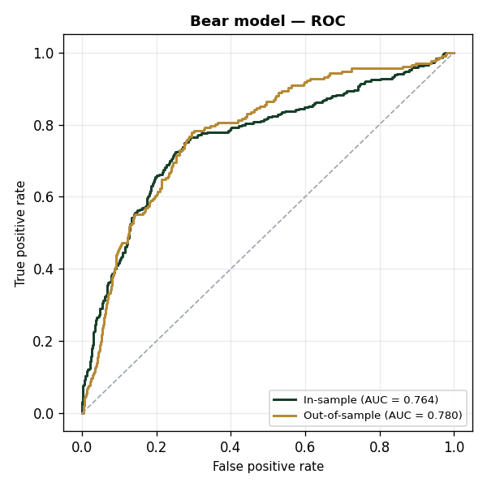
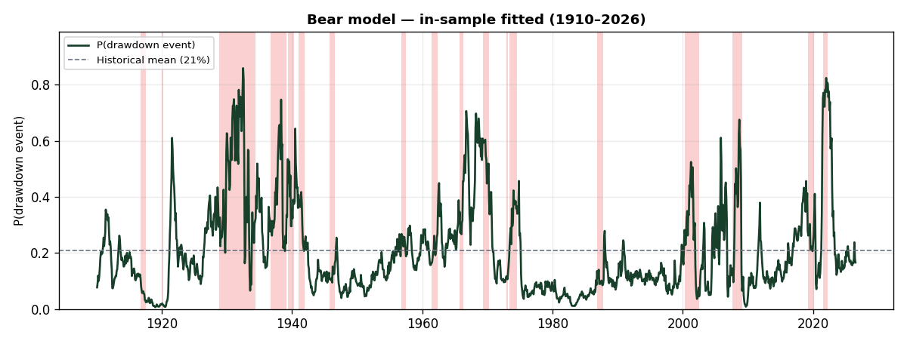
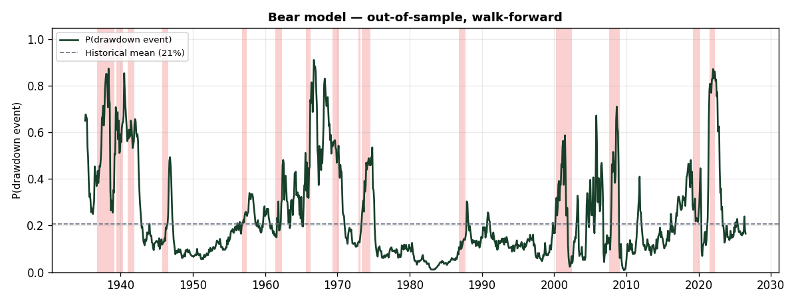

Generated from bear/bear_features.csv and bear/targets.csv. Reproduce with python -m bear.make_docs.
All raw series are monthly (daily/weekly series are sampled to month-end), shifted forward by their real-world publication lag to prevent look-ahead, and transformed to stationary form. Each factor is then standardized on the training sample, $\tilde{x}_{i,t} = (x_{i,t}-\mu_i)/\sigma_i$.
| # | Factor | Raw series | Transformation | Rationale |
|---|---|---|---|---|
| 1 | infl_zscore_120m |
— | — | — |
| 2 | infl_yoy |
— | — | — |
| 3 | spx_vs_10ma |
S&P 500 price (monthly close) | % deviation from 10-month MA (≈ 200-day) | Trend deterioration; price below the long MA is risk-off (Moskowitz-Ooi-Pedersen 2012). |
| 4 | cape_z_120m |
— | — | — |
Forward drawdown target (rolling window):
$$\mathrm{MDD}_t = \min_{t < u \le t+12}\left(\frac{P_u}{\max_{t<v\le u}P_v}-1\right)$$
Link / specification:
$$\hat{p}_t = \Pr(y_t=1) = \sigma(z_t) = \frac{1}{1+e^{-z_t}}$$
$$z_t = \beta_0 + \sum_{i=1}^{4} \beta_i\,\tilde{x}_{i,t}$$
Estimation: coefficients are written as $\beta_i = \mathrm{sign}_i \cdot \gamma_i$ with $\gamma_i \ge 0$ (signs fixed to economic priors), fitted by maximizing the Bernoulli likelihood subject to per-factor weight bounds:
$$w_i = \frac{|\beta_i|}{\sum_j |\beta_j|}, \qquad 0\% \le w_i \le 100\%$$
Fitted model:
$$z_t = -1.625 +1.139\,\tilde{x}_{1} -1.195\,\tilde{x}_{2} -0.480\,\tilde{x}_{3} +0.378\,\tilde{x}_{4}$$
Fitted coefficients (sorted by weight):
| Factor | Coefficient $\beta_i$ | Weight $w_i$ | p (HAC) |
|---|---|---|---|
infl_yoy |
-1.1947 | 37.4% | 0.002 * |
infl_zscore_120m |
+1.1392 | 35.7% | 0.000 * |
spx_vs_10ma |
-0.4801 | 15.0% | 0.016 * |
cape_z_120m |
+0.3775 | 11.8% | 0.114 |
| intercept | -1.6255 | — | — |
* p<0.05 · . p<0.10 (Newey-West HAC, max lag = 12).
Marginal effect of a +1 standard-deviation move in each factor on the model output, evaluated at the current reading ($\partial \hat{y} = \hat{y}(1-\hat{y})\,\beta_i$, $\hat{y}=0.166$):
| Factor | $\beta_i$ | Weight | Δ output / +1 SD | p (HAC) | Push |
|---|---|---|---|---|---|
| CPI inflation, YoY % | -1.1947 | 37.4% | -0.1650 (-16.50 pp) | 0.002 | Bullish |
| CPI inflation, 10yr z-score | +1.1392 | 35.7% | +0.1574 (+15.74 pp) | 0.000 | Bearish |
| S&P 500 vs 10-month MA | -0.4801 | 15.0% | -0.0663 (-6.63 pp) | 0.016 | Bullish |
| Shiller CAPE, 10yr z-score | +0.3775 | 11.8% | +0.0522 (+5.22 pp) | 0.114 | Bearish |
Discrimination is measured against the realized event (Bear event: 12-month drawdown > 20%); the predicted probability is the ranking score.
| Sample | AUC | N | Events |
|---|---|---|---|
| In-sample | 0.764 | 1397 | 290 |
| Out-of-sample (walk-forward) | 0.780 | 1097 | 207 |

Fitted values across the full sample (parameters estimated on the full sample). Shaded spans mark the realized rolling-window event.

Expanding-window estimate: at each month the model is re-fit on prior data only, then predicts that month (no look-ahead).

The 290 event-months in the AUC sample (signal months whose 12-month forward drawdown exceeded 20%) group into 19 distinct episodes. Start/End are the first and last signal months of each run; Worst drawdown is the deepest 12-month forward drawdown observed during the episode.
| # | Start | End | Signal months | Worst drawdown |
|---|---|---|---|---|
| 1 | 1916-09 | 1917-07 | 11 | -28.9% |
| 2 | 1919-12 | 1920-03 | 4 | -22.9% |
| 3 | 1928-10 | 1934-05 | 68 | -71.2% |
| 4 | 1936-09 | 1939-02 | 30 | -52.0% |
| 5 | 1939-05 | 1940-04 | 12 | -31.9% |
| 6 | 1940-12 | 1941-11 | 12 | -28.7% |
| 7 | 1945-09 | 1946-07 | 11 | -27.7% |
| 8 | 1956-10 | 1957-06 | 9 | -20.7% |
| 9 | 1961-05 | 1962-04 | 12 | -28.0% |
| 10 | 1965-08 | 1966-03 | 8 | -22.2% |
| 11 | 1969-04 | 1970-03 | 12 | -32.7% |
| 12 | 1972-11 | 1973-02 | 4 | -23.4% |
| 13 | 1973-05 | 1974-07 | 15 | -43.0% |
| 14 | 1981-03 | 1981-03 | 1 | -21.4% |
| 15 | 1986-10 | 1987-09 | 12 | -33.5% |
| 16 | 2000-03 | 2002-06 | 28 | -34.7% |
| 17 | 2007-07 | 2009-01 | 19 | -52.6% |
| 18 | 2019-03 | 2020-02 | 12 | -33.9% |
| 19 | 2021-06 | 2022-03 | 10 | -25.4% |
| Total | 290 |